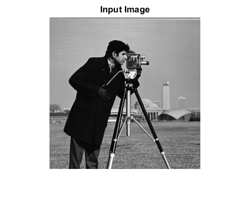
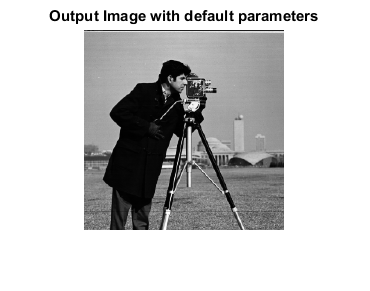
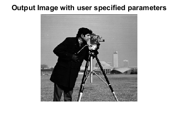

SPATIAL_QUANT_CVIP
spatial_quant_cvip() - Reduces the image size using spatial quantization method.
Contents
SYNTAX
outImage = spatial_quant_cvip( inImage, row, col, method)
Input Parameters include :
- inImage - Input image of MxN or MxNxB size. The input image can be of uint8 or uint16 or double class.
- row - Number of rows or height(1 < row <= M). ( M | default)
- col - Number of columns or width (1 < col <= N). ( N | default)
- method - Reduction method.
method = 1 ---> average
method = 2 ---> median
method = 3 ---> decimation
method = 4 ---> maximum
method = 5 ---> minimum
( 1 | default)
Output Parameter includes :
- outImage - Spatial quant image
DESCRIPTION
The function performs spatial quantization using five reduction methods. spatial_quant allows the user to specify the number of rows and columns in the resultant image, corresponding to the height and width of the new image. The integers specified for row and column sizes must be equal to or less than the input image sizes or an error results. Three methods are available for image reduction: 1) AVERAGE - each pixel in the new image represents an average of the original image pixels it replaces. 2) MEDIAN - each pixel in the new image represents the median value of the original image pixels it replaces. 3) DECIMATION - each pixel in the new image has the same value as a corresponding pixel in the original image; other original-image pixels are discarded. 4) MAXIMUM - each pixel in the new image represents the maximum value of the original image pixels it replaces. 5) MINIMUM - each pixel in the new image represents the minimum value of the original image pixels it replaces.
Because the user may enter different values for height and width, spatial_quant may be used to geometrically distort the image in a rubber-sheet fashion.
REFERENCE
1. Scott E Umbaugh. DIGITAL IMAGE PROCESSING AND ANALYSIS: Applications with MATLAB and CVIPtools, 3rd Edition.
EXAMPLE
% Read image I = imread('cam.bmp'); % Perform spatial quantization with default method O1 = spatial_quant_cvip(I, 200, 200,1); % Perform spatial quantization with user specified parameters O2 = spatial_quant_cvip(I, 180, 200, 3); % Display input image figure;imshow(I);title('Input Image'); % Display output image figure; imshow(hist_stretch_cvip(O1,0,1,0,0));title('Output Image with default parameters'); figure; imshow(hist_stretch_cvip(O2,0,1,0,0));title('Output Image with user specified parameters');  
CREDITS
Author: Norsang Lama, June 2017
Copyright © 2017-2018 Scott
E Umbaugh
For updates visit CVIP Toolbox Website